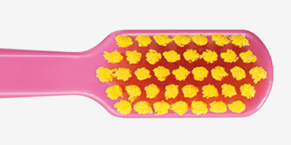
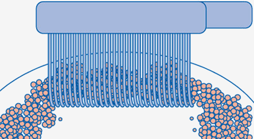
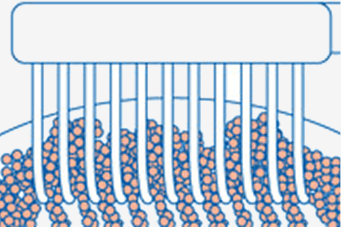
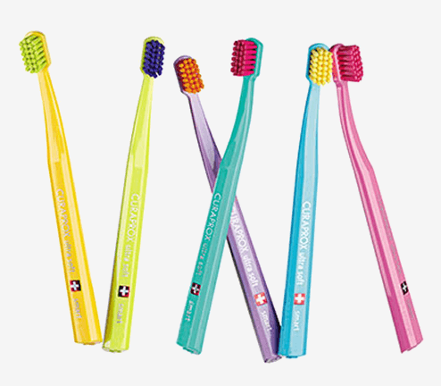
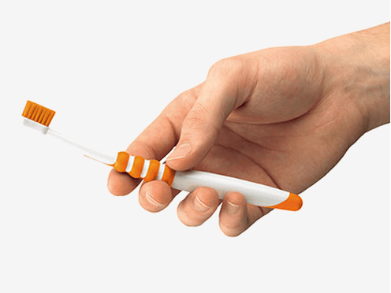
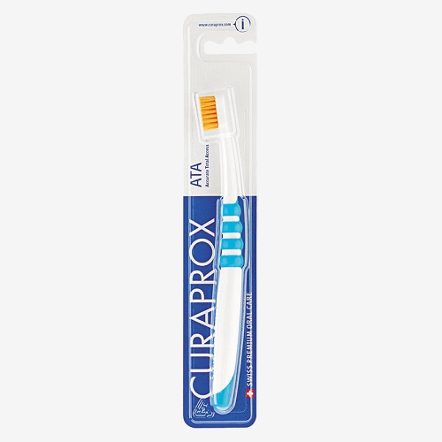
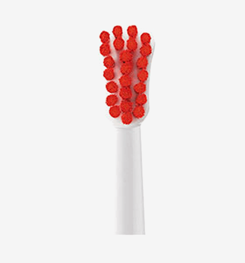
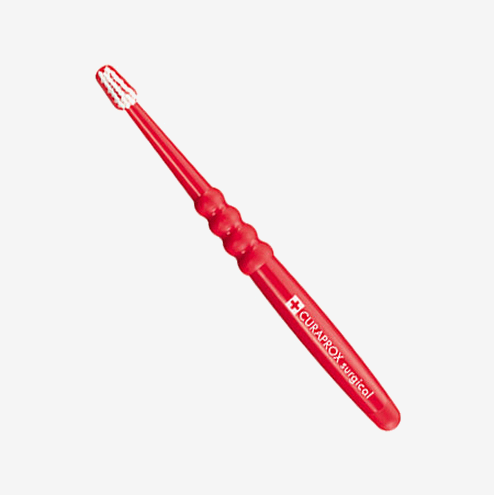
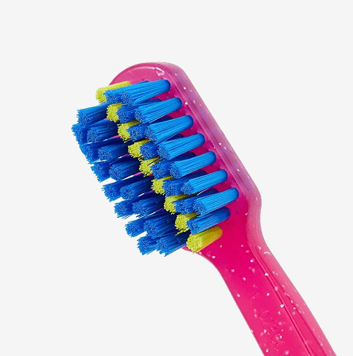
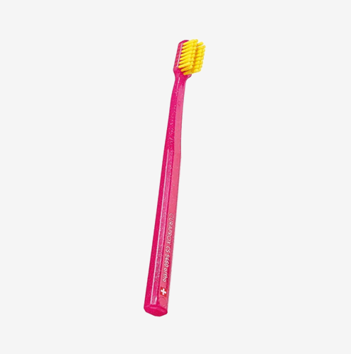

PESITRO
____________________
Toothbrushes

The secret lies in the ultra-soft CUREN®️ bristles. CURAPROX toothbrushes not only prevent gum injury during brushing but also effectively break down and remove dental plaque.
CUREN®️ bristles are denser than nylon, absorb less moisture, and retain their cleaning properties in the mouth up to 60% better. These unique polyester fiber qualities allow CURAPROX to produce toothbrushes with a higher number of ultra-thin bristles for superior cleaning.

5460 ultra soft
Contains 5,460 ultra-soft CUREN®️ bristles, each 0.1 mm in diameter. Your gums will love this incredibly gentle yet highly effective toothbrush — a global favorite. Made in Switzerland.
Ordinary toothbrushes have only about 500–800 bristles. This makes plaque removal less effective, leaving residue on the enamel surface and increasing the risk of dental problems

Contains 3,960 CUREN®️ bristles, each 0.12 mm in diameter. This toothbrush ensures gentle care for your gums and excellent oral cleanliness. Perfect for those who doubt that an ultra-soft brush can be truly effective. Made in Switzerland.
CS 1560 soft
Contains 1,560 CUREN®️ bristles, each 0.15 mm in diameter. Ideal for those who prefer firmer toothbrushes — a perfect introduction to the gentle yet effective world of CURAPROX brushes. Made in Switzerland.

A global innovation! Designed for children aged 5 and up. This toothbrush is modeled after CURAPROX's most successful adult version — just much smaller and, surprisingly, packed with even more bristles made of CUREN®️, which are now even thinner. Brushing teeth has never been easier or more enjoyable.
The smart toothbrush CS smart features 7,600 ultra-fine CUREN®️ bristles, each 0.08 mm in diameter. Made in Switzerland.
All of this makes the Smart brush incredibly gentle on teeth and gums — yet truly powerful against plaque. It’s no surprise that during testing, even dentists requested the Smart brush for their personal use. And we’re always happy to share!

This toothbrush is a true gift for people with wedge-shaped enamel defects, gum recession, enamel erosion, and other non-carious lesions of hard dental tissues. Applying pressure with this toothbrush is virtually impossible. Why?
The round handle shape encourages users to hold the brush with all fingers instead of gripping it in a fist. This means the thumb doesn’t press on the handle, minimizing brushing pressure. That makes the ATA an ideal transition brush from the CS 5460 ultra soft to the single-tuft brush CS 1006. It also helps introduce patients to the SOLO brushing technique and demonstrates the benefits of gentle brushing without pressure.
• Round handle for pressure control
• Very small, pear-shaped brush head
• 4,860 soft CUREN®️ bristles, 0.1 mm in diameter
• Developed in collaboration with dentists from the University of Bern
• Suitable for teens during the mixed dentition phase

Thumb pressure occurs when a toothbrush is gripped in a fist. That’s why applying pressure with the ATA toothbrush is nearly impossible — just like with most other CURAPROX brushes. Its round handle reduces pressure to a minimum, making ATA the perfect toothbrush for learning a safe brushing technique.
It also serves as an ideal transitional brush on the way to mastering the SOLO brushing technique with the CS 1006 single-tuft toothbrush.

The small, inverted brush head is another clever detail that delivers a big impact. It allows ATA users to brush gently and thoroughly. The smaller the brush head, the more precisely each tooth can be cleaned. And the gentler the movements, the less pressure is applied to teeth and gums — making brushing completely safe.
ATA is the perfect way to build the habit of cleaning each tooth individually and with precision.

Specially designed for post-surgical dental care, for patients with oral mucosa inflammation, or undergoing oral radiotherapy. The CS surgical mega soft contains 12,000 ultra-fine bristles, providing exceptionally gentle oral hygiene during sensitive medical conditions.
• 12,000 ultra-soft CUREN®️ bristles, each 0.06 mm in diameter
• Ideal for post-operative care, oral inflammation, and during radiotherapy
• Developed in collaboration with Prof. Dr. N. P. Lang, a professor of dentistry and medicine at the University of Bern Dental Clinic
• Perfectly complements the Perio Plus+ oral care line

Fixed dental appliances like braces, crowns, and bridges require extra attention and thorough daily cleaning. The CS 5460 ortho toothbrush and the CS 1009 single-tuft brush are ideal for this purpose. The modified single-tuft brush with longer bristles also makes it easier to clean the gum line around braces and/or implants.
• Perfect for cleaning around braces crowns, and implants
• Rounded bristles adapt gently to gum anatomy for safe and effective care

Contains 5460 ultra-soft CUREN®️ bristles, each 0.1 mm in diameter. Designed with a groove specifically for orthodontic wires, it gently and thoroughly cleans around braces, teeth, and gums.